1. Performer Setup
Create a performer
Hand Engine 3 has the ability to create and store calibration for multiple performers. Upon launching a Default performer will be automatically generated.
If you have Hand Engine Pro, you can add more than one performer by clicking on Add.

The performer will be created and automatically staged.

Stage an existing performer
If a performer is already staged, the check box next to that performer will be ticked. To stage a performer, please select the check box next to that performer.
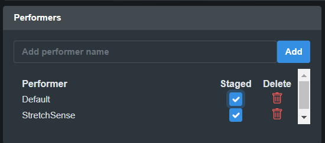
Unstage a Performer
To unstage a performer, please de-select the check box next to that performer. You can select this box to bring the performer back to the stage.
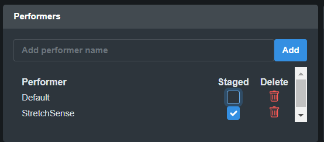
2. Connecting Your Gloves to Hand Engine
To connect to your gloves, please stage a performer, and next to the associated hand (Left or Right), click on the drop-down box to select the connection mode:

Choose the appropriate option from the dropdown menu, either Left or Right hand, based on the side you are configuring.
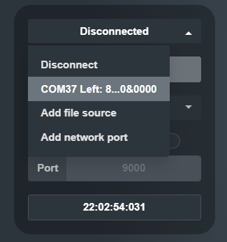
3. Calibration (Smart Calibration)
Please make sure you have staged a performer and connected your gloves to Hand Engine prior to performing a calibration.
- Make sure your glove is connected and data is coming through.
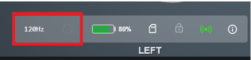
- Click on the Calibrate button
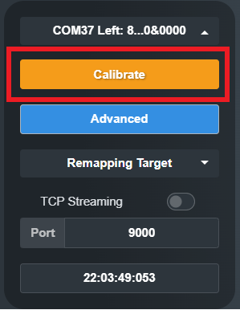
- Perform hand motion as per the instructions on the screen.
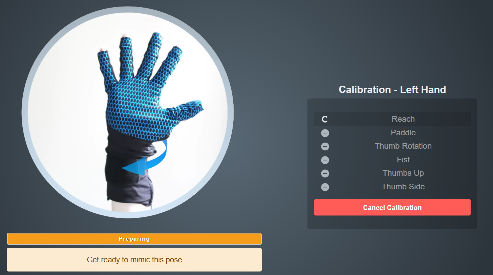
- Now you are all set!
TIP:
You can increase the progress bar duration in Edit -> Settings.
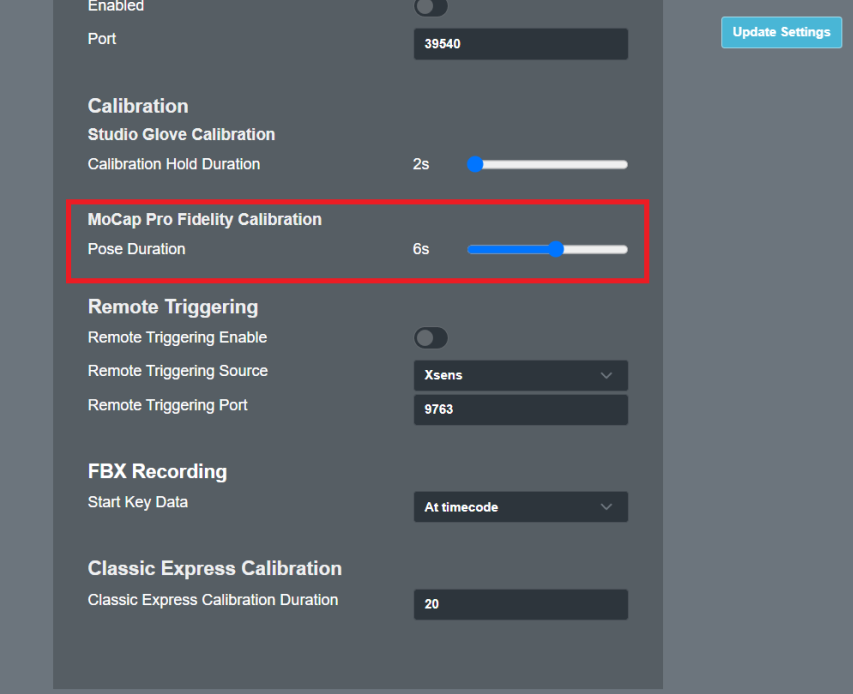
3. Export and Import Calibration
Hand Engine export and import calibrations for your performers. This can be very useful if moving between machines, or if you wish to keep a backup of your calibration.
Calibrations are saved as a .json file.
Exporting a Calibration:
- Make sure a glove is connected and a calibration has been completed.
- Focus Performer and click on Advanced

- Go to the Hand Training tab, then please click on the Export Calibration button
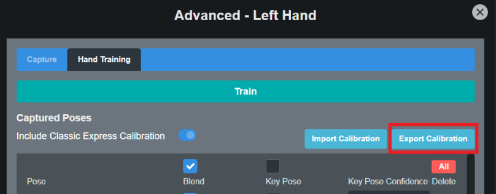
- Give your calibration file a name and save it somewhere convenient.
Importing a Calibration
- Make sure a glove is connected and calibration has been completed.
- Focus Performer and click on Advanced
- Go to the Hand Training tab, then please click on the Import Calibration button
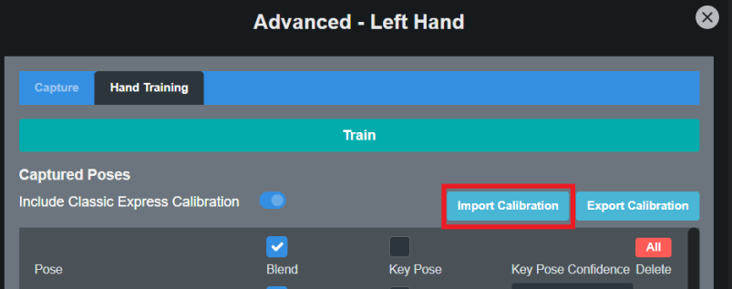
- Navigate to where your calibration files are saved and open the calibration file you require.
- Once the calibration has loaded all the poses, please select the poses you wish to use for calibration (Blend or Pose) or turn "Include Classic Express Calibration" and click the Train button.
- Calibration Files containing Express Calibration Only:
- When importing a calibration that only contains the Classic Express Calibration (and no captured poses), you will need to capture a single pose (any pose) before you can click the Train button. You can then deselect this pose from the Blend column and click Train a second time to return to your imported Express Calibration only
4. Express Calibration
Please make sure you have staged a performer and connected your gloves to Hand Engine prior to performing a calibration.
-
Click on the Advanced button
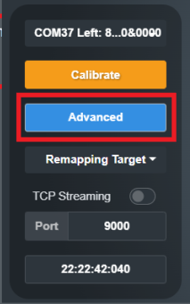
-
In the Advanced window, click on Calibrate Classic Express
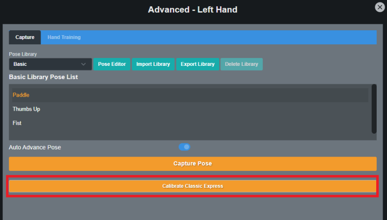
-
A calibration timer will come up on the screen. Please ask the performer to move their fingers continuously to extreme positions.
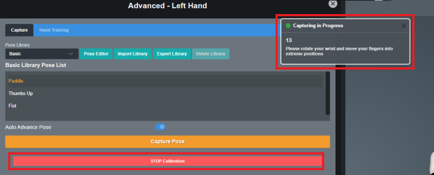
-
Once you have completed the Express Calibration, you can start recording or streaming right away!
Tip: Changing Express Calibration Duration
While you will achieve amazing results with a 15-second calibration, you may wish to have a little more time to complete the process.
You can change the Express Calibration Duration in the Settings menu as shown below:
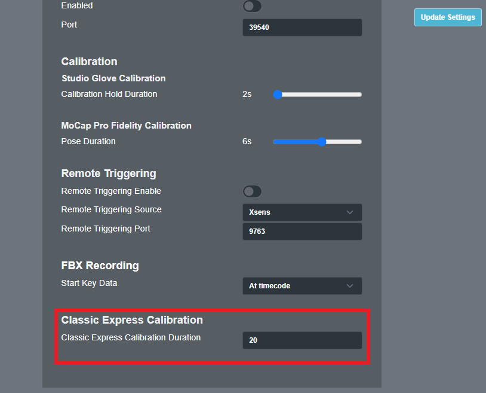
5. Advanced Calibration - Pose Capture
- Click on Advanced next to the performer's hand you wish to calibrate.

- The Advanced Calibration window will pop up.
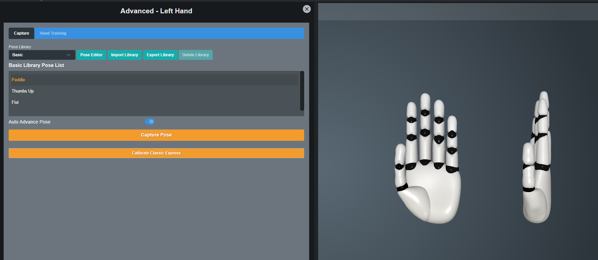
- Next, Select the pose library that contains the poses you wish to capture for your calibration
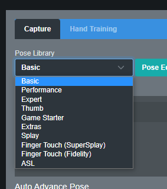
- Select the pose you wish to start with. The viewport hand as selected will change to the selected pose
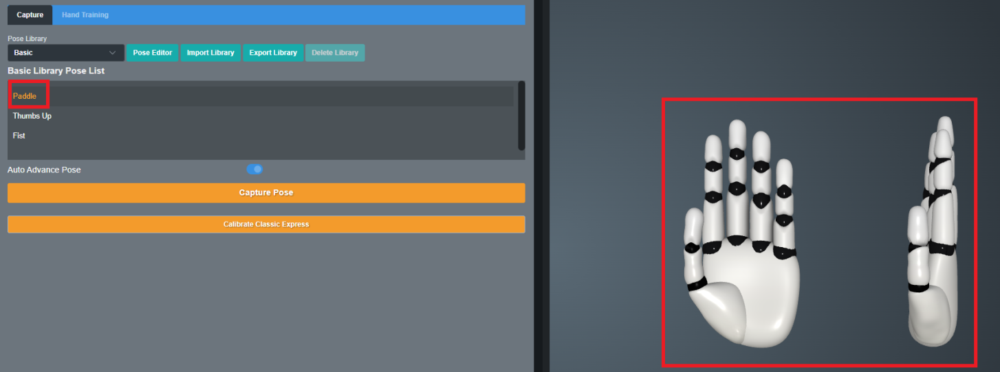
- Have the performer replicate their hand exactly as seen on the viewport hand shown to the side of the Advanced Calibration window.
- Have the performer rotate their wrist slightly whilst holding their hand in the correct pose
- While rotating the wrist and holding the pose, please click on the "Capture Hand" button.
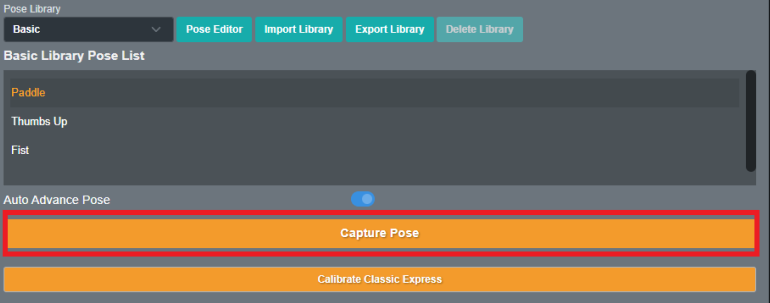
- The capture takes a couple of seconds, please maintain pose and wrist rotation until the button turns orange again.
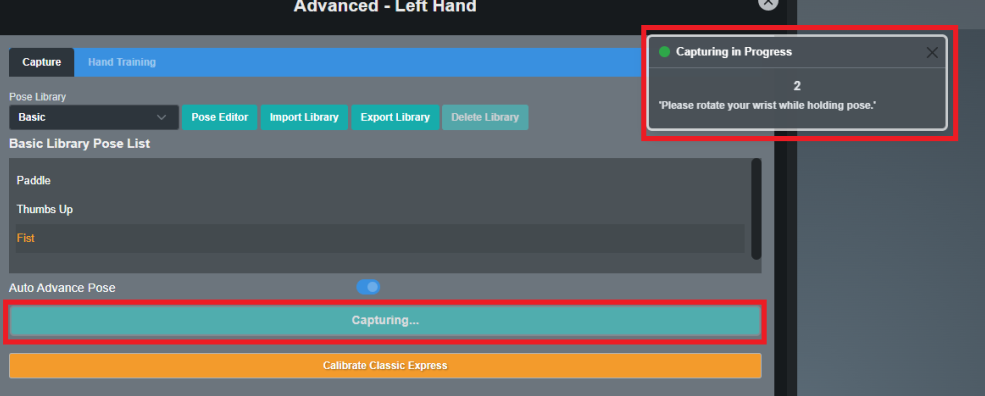
- If you have "Auto Advance Pose" Selected, the viewport hand will move to the next pose in the library automatically.
- Repeat those steps for each of the poses in the library as required.
If you have captured a pose incorrectly and wish to delete that pose. Please click on the Hand Training tab and click on the delete button next to the pose you wish to delete.
Tip: You can click and drag the viewport to rotate the hand. This makes getting a better view of the pose easier so you can replicate it exactly.
IMPORTANT!
- For best results, have the performer initially copy the reference pose with their hand with the wrist straight.
- It is very important to make sure all of the joints on the performer’s hand match the reference hand pose from the pose library, if the performer cannot achieve the pose, they shouldn't train to that pose than to train it incorrectly.
- Furthermore, it is highly beneficial to ensure that if a particular joint is in the same position in more than one pose, for each of these poses the corresponding joint on the performer’s hand is also in the same position.
- This provides higher-quality data to the hand solver that results in optimal calibration performance.
- Once the performer is set in the hand pose, ask them to hold the hand pose steady and hold their forearm steady while gently rotating at their wrist (e.g. like the wrist would move when using a skipping rope), and to keep rotating their wrist in this circular motion until the capture is complete.
- Start the capture process by clicking the Capture button. The capture process takes <3 seconds for each captured pose.
6. Captured poses settings
Hand Engine has various options for working with the captured poses, making it an extremely flexible tool to achieve the results you require.
To access these options, please enter the Advanced section of Hand Engine and click on the Hand Training tab at the top.
In this section, you will find all the settings required to make adjustments to your calibration.
- Express
- Blend Pose Mode
- Key Pose Mode
- Tuned Express
- Express with Key Pose
- Blend Pose with Key Pose
- Tuned Express with Key Pose
- Key Pose Settings
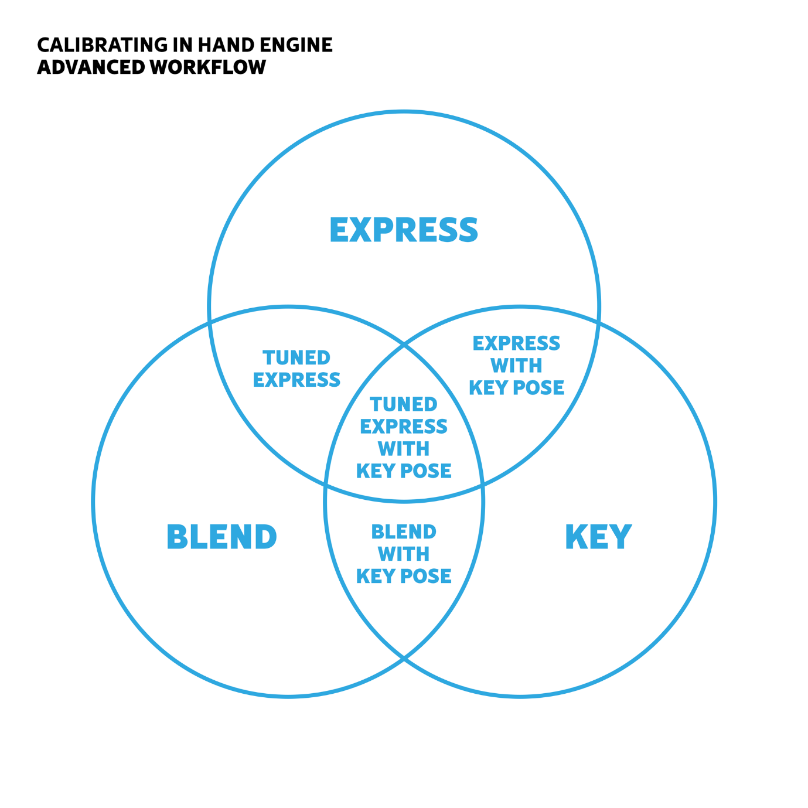
Classic Express Mode
If you have performed a Classic Express Calibration. Hand Engine will default the hand output to using the Classic Express mode.
If you have used an Advanced calibration training method such as Blend or Pose, and wish to go back to the Classic Express output mode:
-
Open the advanced Section
-
Select the Hand Training tab
-
Deselect any poses under the Blend or Pose columns
-
Select the "Include Classic Express Calibration" toggle
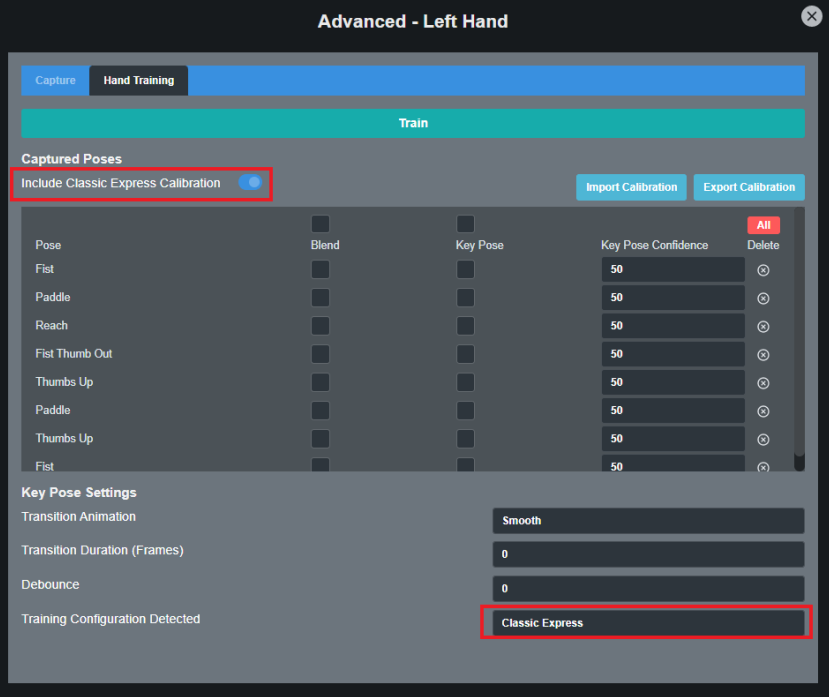
Click on "Train" to set the output to Express Mode
This switch will turn on or off any express calibration that you have done. If you wish to use a blend calibration (where Hand Engine will only use captured poses as its calibration source), please turn this switch off and see below for how to use the blend mode.
Blend Pose Mode
If Express mode is turned off, Selecting poses in the blend column will include these as part of the base calibration. Please add the poses you see fit to achieve the calibration quality you require.
-
Open the Advanced window
-
Select the Hand Training tab
-
Ensure you have captured a set of poses.
-
Turn "Use Express Mode" off
-
Select the poses you have captured under the Blend column.
-
Click on "Train" to set the output to use your captured poses as a Blend mode calibration.
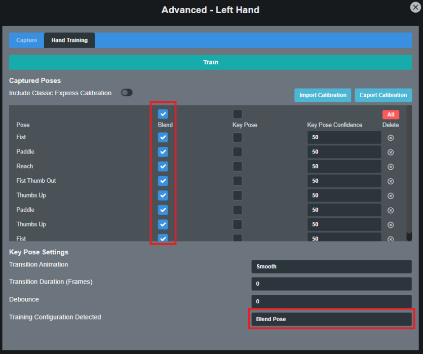
Key Pose Mode
By selecting one of the checkboxes under the Pose column, Hand Engine will be able to Key (or lock) to that pose.
If there are no Blend poses selected, and "Use Express Mode" is turned off, Hand Engine will only output the key poses you have selected under the pose column.
-
Open the Advanced window
-
Select the Hand Training tab
-
Ensure you have captured a set of poses.
-
Turn "Use Classic Express Calibration" off
-
Deselect any poses that may be ticked under the Blend column.
-
Select the poses you wish to pose mode under the pose column
-
Refer to the Key Pose Settings section later in this document for further customization.
-
Click on "Train" to set the output to use your captured poses as a Key mode calibration.
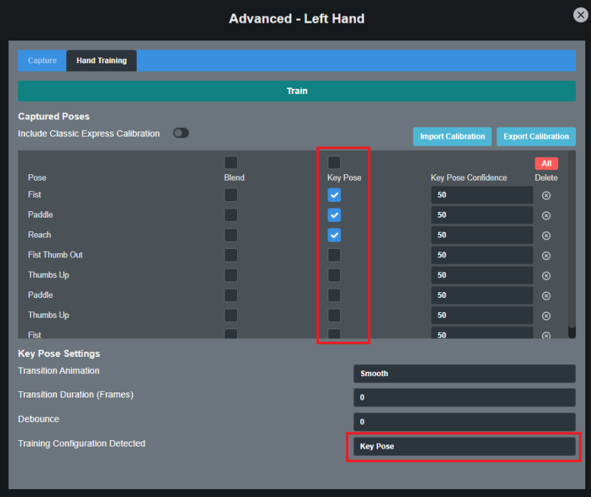
Tuned Classic Express
Tuned Classic Express is the combination of the Classic Express calibration with some blend poses to improve the overall accuracy of the Classic Express calibration.
-
Open the Advanced Window
- Perform a Classic Express Calibration
-
Capture poses you wish to use to improve upon the Classic Express calibration you have done
Before selecting poses, assess where the calibration needs improvement. A great way to do this is to check poses such as Paddle, Fist, and Thumbs up, and see if the accuracy of any of the fingers needs improving in these areas.
-
Go to the Hand Training Tab
-
Make sure that "Include Classic Express Calibration" is turned on
-
Select the poses you wish to use for the tuned express under the Blend Pose column
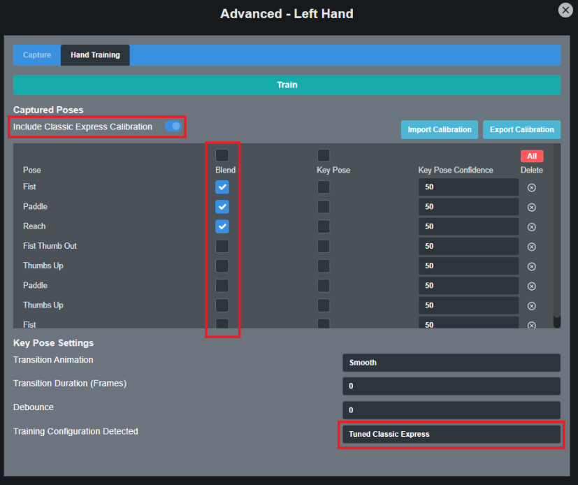
-
Click on Train and assess your calibration.
Classic Express with Key Pose
Classic Express with Key Pose is the combination of express mode calibration and selecting key poses.
-
Open the Advanced window
- Perform a Classic Express Calibration
-
Select the Hand Training tab
-
Ensure you have performed captured a set of poses.
-
Turn "Include Classic Express Calibration" on
-
Deselect any poses that may be ticked under the Blend column.
-
Select the poses you wish to key under the pose column and refer to the Key Pose Settings section in this documentt for further customization.
-
Click on 'Train' to apply the changes.
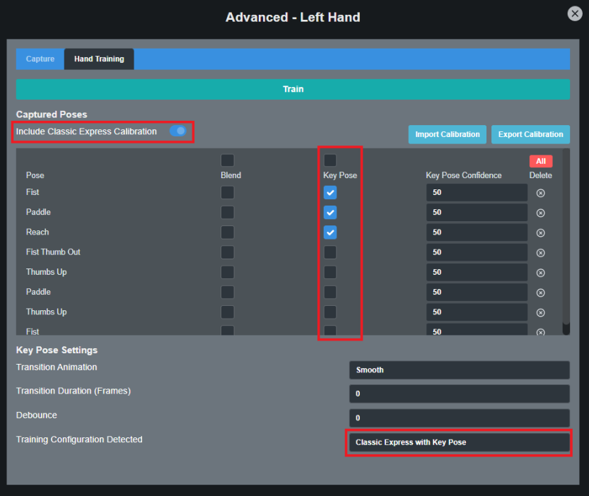
Important! - Selecting Key Poses
-
Please select a minimum of two poses for this to operate correctly. The two poses need to be at opposite extremes of the joint angle. You are able to set the key confidence of the opposing pose extremely low if you do not wish Hand Engine to key to that pose.
-
Example: If you wish to key to the Fist pose, you can select the Paddle pose and set the key confidence of the Paddle to 5. For the Fist pose, you could set the key confidence to 15 as you wish to key into the First.
-
Test the sensitivity of the key poses, and adjust the Key Confidence higher or lower depending on how strongly you wish to lock into these poses.
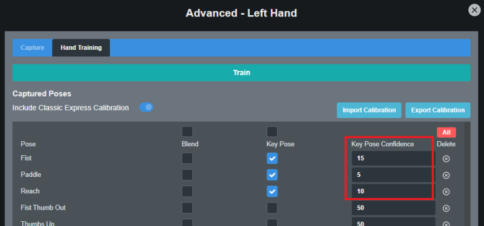
-
If you have changed any key poses or key confidence, please click the Train button again to update the calibration.
-
All other hand motions besides the key poses will be based on the Classic Express calibration.
Blend Pose with Key Pose
Blend Pose with Key Pose is the combination of a blend base calibration and selecting key poses.
-
Open the Advanced window
-
Select the Hand Training tab
-
Ensure you have captured a set of poses.
-
Turn "Use Classic Express Mode" off
-
Select the poses you wish to use for the blend calibration under the blend column.
-
Select the poses you wish to key under the pose column.
-
Refer to the Key Pose Settings section for further customization.
-
Click on 'Train' to apply your changes.
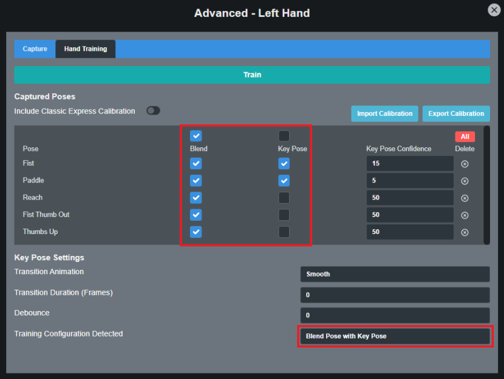
Important! - Selecting Key Poses
-
Please select a minimum of two poses for this to operate correctly. The two poses need to be at opposite extremes of the joint angle. You are able to set the key confidence of the opposing pose extremely low if you do not wish Hand Engine to key to that pose.
-
Example: If you wish to key to the Fist pose, you can select the Paddle pose and set the key confidence of the Paddle to 5. For the Fist pose, you could set the key confidence to 15 as you wish to key into the First.
-
Test the sensitivity of the key poses, and adjust the Key Confidence higher or lower depending on how strongly you wish to lock into these poses.
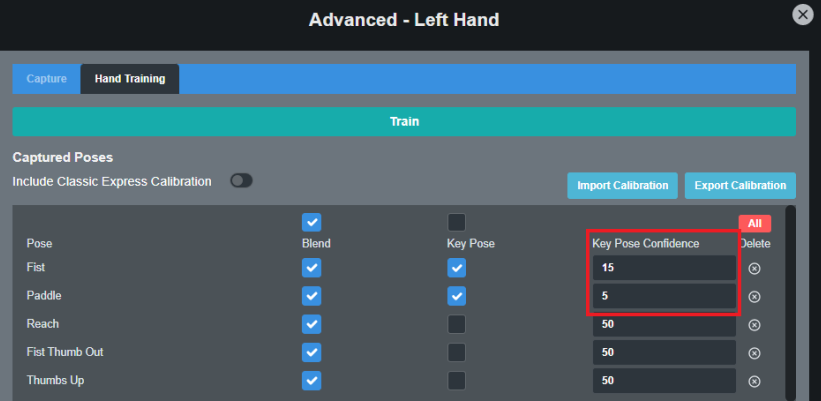
-
If you have changed any key poses or key confidence, please click the Train button again to update the calibration.
-
All other hand motions besides the key poses will be based on the Blend calibration.
Tuned Classic Express with Key Pose
Tuned Classic Express with Key Pose brings together the power of Tuned Classic Express mode with key poses that will snap into place when the hand is in that pose.
-
Open the Advanced Window
- Perform a Classic Express Calibration
-
Capture the poses you wish to use for tuned Classic Express and the poses you wish to key.
-
Click on the Hand Training tab
-
Make sure that "Include Classic Express Calibration" is switched on
-
Select the poses in the Blend column you wish to use to improve the express calibration (Tuned Classic Express)
-
Select the poses in the Key Pose column you wish to have the hand snap into.
-
Adjust the key confidence as required.
-
Refer to the Key Pose Settings section in this document for further customization.
-
Click on 'Train' to apply your changes.
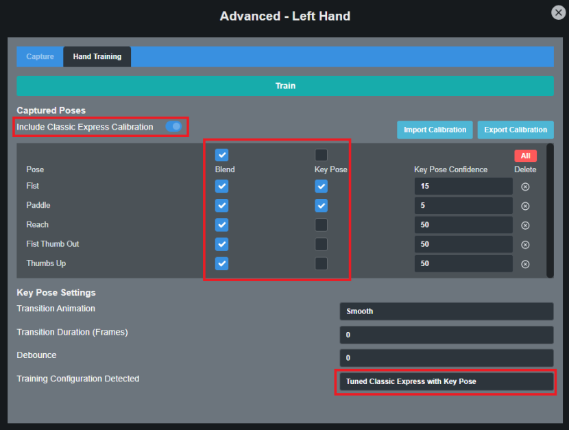
Key Pose Settings
The Key Pose Settings feature is designed to make the transition into your selected key poses feel more natural and personalized to your preferences.
-
Transition Animation
-
Smooth - Slow in, slow out transition. 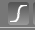
-
Linear - Linear transition.
-
Ease Inc - Fast in, slow out transition.
-
Ease Out - Slow in, fast out transition 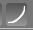
-
Transition Duration (Frames)
This setting determines the number of frames it takes for the hand animation to transition from the current pose to the target pose. Increasing the number of frames will enhance the smoothness of the transition.
-
Debounce (Frames)
This setting determines the number of consecutive frames that the Key Pose mode must detect when performing a new pose before the hand animation updates to the target pose.
This mode is primarily used when a significant number of Key poses are selected to prevent the hand animation from quickly snapping into unintended poses.
7. Creating Custom Poses
-
Navigate to Tools - > Pose Editor.
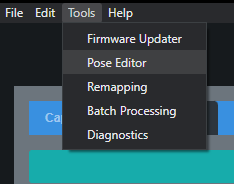
-
To create your custom pose you will have to select a base pose as a starting point. In this example, we will select Paddle from the Basic Pose Library.
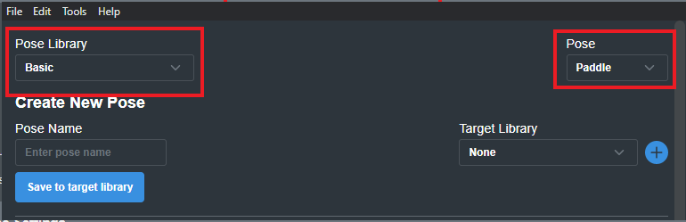
-
Type in your custom pose name in the name box and choose either create a new Pose Library (click on the + button) or add it to an existing one (select from the dropdown). In this example, we will create a custom library.
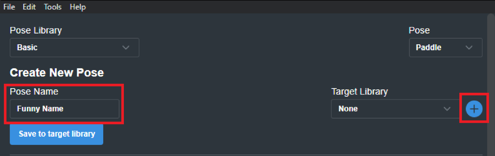
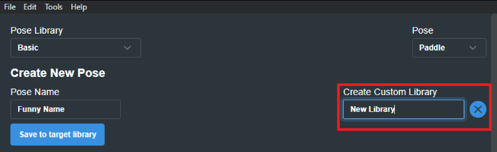
-
Then you can select the joint you would like to edit, you can either use the gizmo or update the sliding bars.
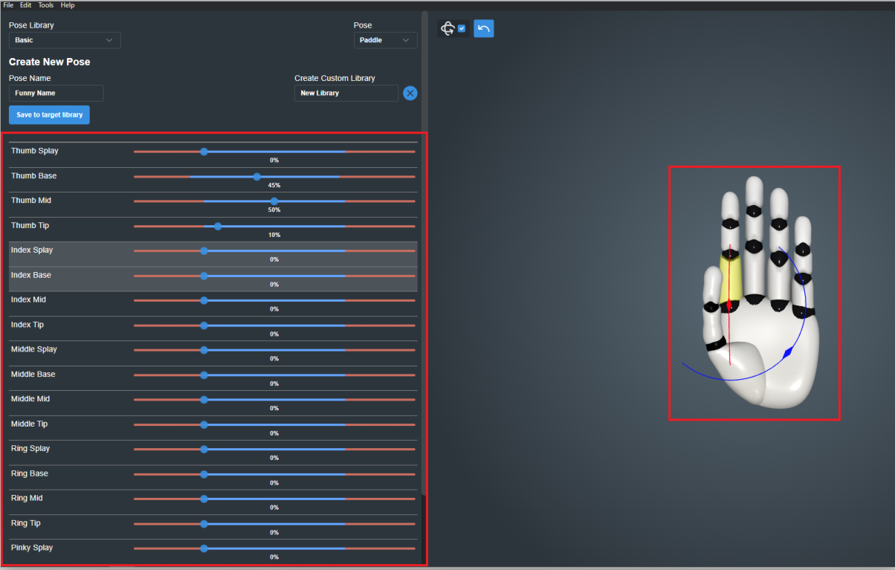
-
Once you are finished creating your custom pose, click on 'Save to Target Library.
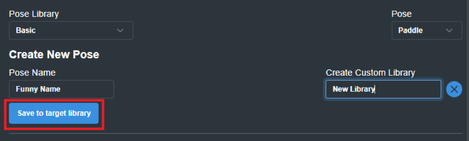
-
Now you will be able to add the pose to your calibration in the Advanced Window
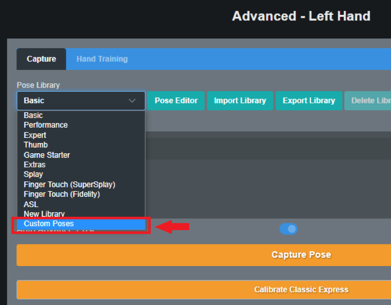
Tip:
In the Pose Editor window, you can left-click the hand view to move the camera angle.